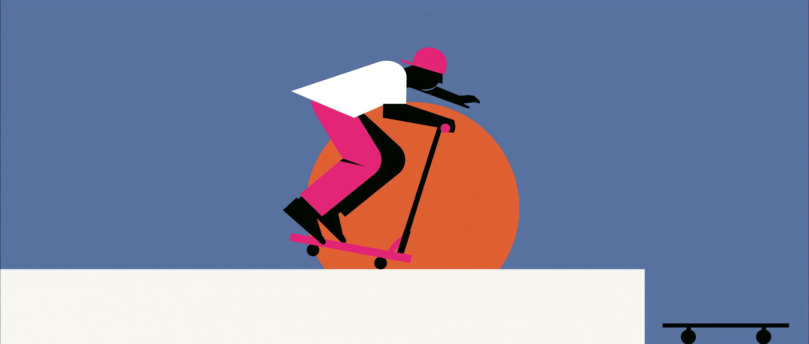

Sending It — The Language of Scooter Tricks · Level C1

Vocabulary · Reading · Grammar · Speaking
Sending It: The Language of Scooter Tricks
Skate parks are full of a vocabulary all their own — one that's crept into everyday English through video edits, commentary, and rider slang. This lesson pushes you to C1 territory: precise trick terminology, a reading on scooter culture, a grammar focus on inversion for dramatic emphasis, and speaking practice to put it all together.
You will complete: 12 vocabulary questions, a short reading text with 6 comprehension questions, 8 grammar questions on inversion, and 4 speaking prompts.
Part 1 · Vocabulary
Trick Terminology
Complete each sentence with the correct word or phrase. This vocabulary is precise — riders distinguish carefully between close terms.
Part 2 · Reading
From Pavement to Podium
Part 3 · Grammar Focus
Inversion for Emphasis
At C1 level, fronting a negative or restrictive adverbial and inverting the subject and auxiliary creates dramatic, formal emphasis — a device you'll find in commentary and narrative writing alike.
Structure: negative/restrictive adverbial + auxiliary + subject + verb (e.g. "Never had the crowd seen a trick land so clean.")
Choose the correct inverted form to complete each sentence.
Part 4 · Speaking Practice
Talk It Through
Speak your answers aloud — alone, with a partner, or record yourself. There are no right or wrong answers here.
1. Have you ever tried an extreme or action sport? Describe the experience, including any fear you had to overcome.
2. Why do you think risk-taking sports like scootering have become so popular with young people, despite the danger of injury?
3. Describe a moment — in sport or elsewhere — when you had to fully commit to something with no way to back out. Try using an inverted structure, such as "Not until..." or "Only after...".
4. Should extreme sports be taught in schools as part of physical education? Argue for or against.
Part
Question 1 of 12
Results
Landed Clean!
0 / 26
You've built specialised vocabulary for describing risk and skill, practised reading for detail, and worked on inversion — a structure that will sharpen your writing and impress in formal and narrative English alike.